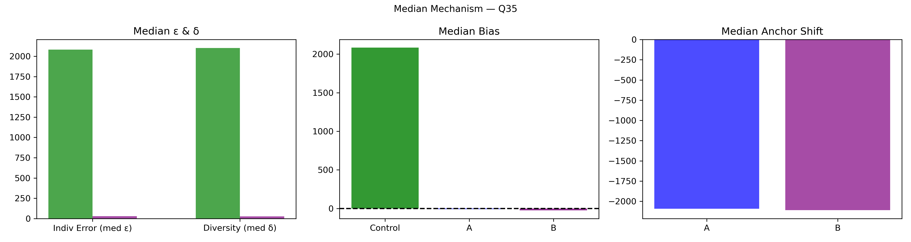

Question Q35: How many reacts will the last post on Mtl en Arts FB page on Tuesday get within 24 hrs?
Super Summary
================================================================================
QUESTION Q35: 05_Export_0713_stats_22bJsXhZzK.csv
How many reacts will the last post on Mtl en Arts FB page on Tuesday get within 24 hrs?
Truth = 37.0
N_ctrl = 89 N_ext = 108
================================================================================
[1] COLLECTIVE ERROR (E)
Control Ec: 3826.0833 ± 411.9549
CI = [ 3034.7677 , 4641.9213 ]
Extremized Ex: 60.8090 ± 33.7325
CI = [ 9.8851 , 138.1722 ]
Difference (Ec - Ex) = 3765.2743
Percent Change = 98.41%
Bootstrap:
P(Ex < Ec) = 1.0000
→ 100.0% of samples show extremized < control
[2] INDIVIDUAL ERROR (ε)
Control mean ε = 3817.8764
Extremized ε = 83.9815
Percent Change = -97.80%
Welch t-test: t = 9.097, p = 2.38e-14
Cohen's d = 1.434
[3] DIVERSITY (δ)
Control SD = 3845.8772
Extremized SD = 314.5277
Percent Change = -91.82%
Levene p = 1.813e-31
[4] ANCHOR DIAGNOSTICS
Anchor A = 4.0
Anchor B = 73.0
A_effective = True
B_effective = True
[5] EQUATION 6 CHECK
w_L = 0.9780 w_H = 0.9903
Delta = 7747.2628
Criterion_L = True Criterion_H = True
Meets both = True
[6] δ–ε–E SCENARIO
Scenario: δ:down, ε:down, E:down
Mechanism Explanation: Calibration: anchors pull predictions inward toward the truth, reducing both individual error and diversity and improving collective accuracy.
================================================================================
FINAL INTERPRETATION (with actual figures)
================================================================================
For Q35, collective error shifted from 3826.08 to 60.81 (98.41%). Bootstrap = 100.0%. Individual error changed by -97.80%, diversity changed by -91.82%. Scenario = δ:down, ε:down, E:down. Equation 6 feasibility = True.
================================================================================
Median-Based Plot

Median Mechanism Plot
